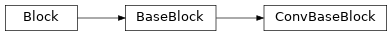
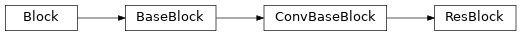
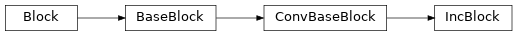
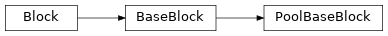
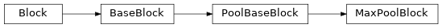
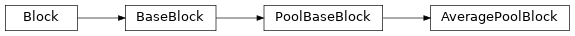
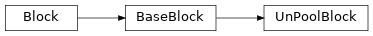

emloop_tensorflow.models.conv_blocks¶ConvBaseBlock:
Base block for convolution-like blocks.ConvBlock:
2D/3D convolutional layer.ResBlock:
Original residual block.IncBlock:
Inception-v3 block.PoolBaseBlock:
Base block for pooling blocks.MaxPoolBlock:
Max pooling block.AveragePoolBlock:
Average pooling block.UnPoolBlock:
Un pooling block.GlobalAveragePoolBlock:
Global average pooling block effectively flattening spatial dimensions of the input feature maps.emloop_tensorflow.models.conv_blocks.ConvBaseBlock(conv_fn=<function identity>, bn_fn=<function identity>, ln_fn=<function identity>, extra_dim=(), **kwargs)[source]¶Bases: emloop_tensorflow.models.blocks.BaseBlock
Base block for convolution-like blocks.
__init__(conv_fn=<function identity>, bn_fn=<function identity>, ln_fn=<function identity>, extra_dim=(), **kwargs)[source]¶Try to parse and create new ConvBaseBlock.
| Parameters: |
|---|
emloop_tensorflow.models.conv_blocks.ConvBlock(**kwargs)[source]¶Bases: emloop_tensorflow.models.conv_blocks.ConvBaseBlock
2D/3D convolutional layer.
code: (num_filters)c[(time_kernel_size)-](kernel_size)[s(stride)]
examples: 64c3, 64c3s2, 64c3-5s2 (convolution with kernel (3x5x5) assuming BTHWC data)
emloop_tensorflow.models.conv_blocks.ResBlock(**kwargs)[source]¶Bases: emloop_tensorflow.models.conv_blocks.ConvBaseBlock
Original residual block.
emloop_tensorflow.models.conv_blocks.IncBlock(pool_fn=<function identity>, **kwargs)[source]¶Bases: emloop_tensorflow.models.conv_blocks.ConvBaseBlock
Inception-v3 block.
emloop_tensorflow.models.conv_blocks.PoolBaseBlock(prefix='', pool_fn=<function identity>, extra_dim=(), **kwargs)[source]¶Bases: emloop_tensorflow.models.blocks.BaseBlock
Base block for pooling blocks.
__init__(prefix='', pool_fn=<function identity>, extra_dim=(), **kwargs)[source]¶Try to parse and create new PoolBaseBlock.
| Parameters: |
|---|
emloop_tensorflow.models.conv_blocks.MaxPoolBlock(mp_fn=<function identity>, **kwargs)[source]¶Bases: emloop_tensorflow.models.conv_blocks.PoolBaseBlock
Max pooling block.
emloop_tensorflow.models.conv_blocks.AveragePoolBlock(ap_fn=<function identity>, **kwargs)[source]¶Bases: emloop_tensorflow.models.conv_blocks.PoolBaseBlock
Average pooling block.
emloop_tensorflow.models.conv_blocks.UnPoolBlock(**kwargs)[source]¶Bases: emloop_tensorflow.models.blocks.BaseBlock
Un pooling block.
CODE_PREFIX = 'u'¶Un pooling code prefix character.
emloop_tensorflow.models.conv_blocks.GlobalAveragePoolBlock(**kwargs)[source]¶Bases: emloop_tensorflow.models.blocks.BaseBlock
Global average pooling block effectively flattening spatial dimensions of the input feature maps.
Warning
Expects ?HWC data format (e.g. BHWC or BTHWC).
__init__(**kwargs)[source]¶Try to parse and create new GlobalAveragePoolBlock.